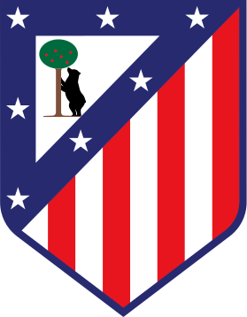
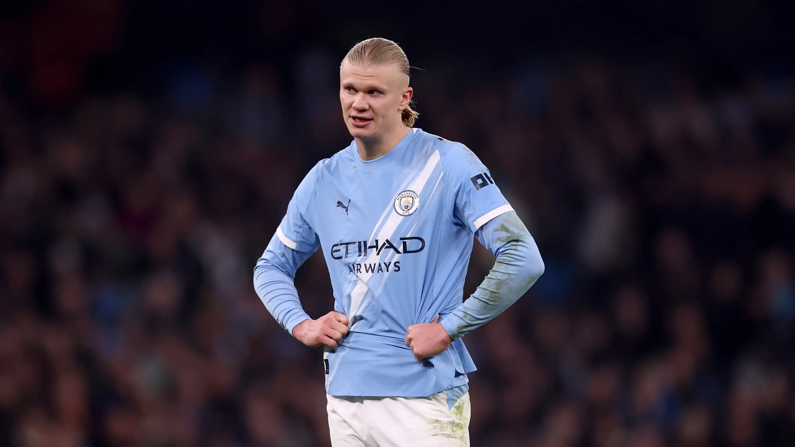
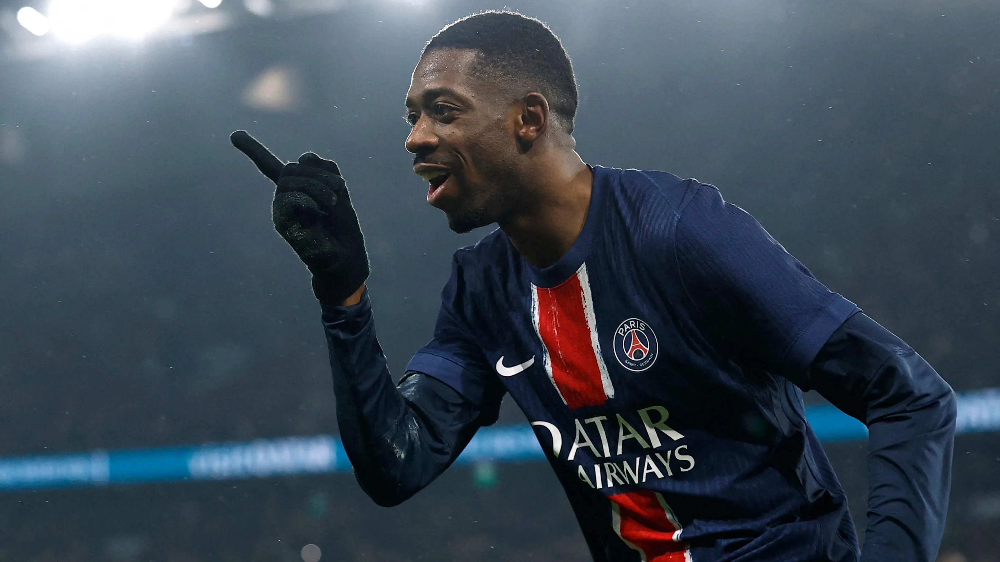
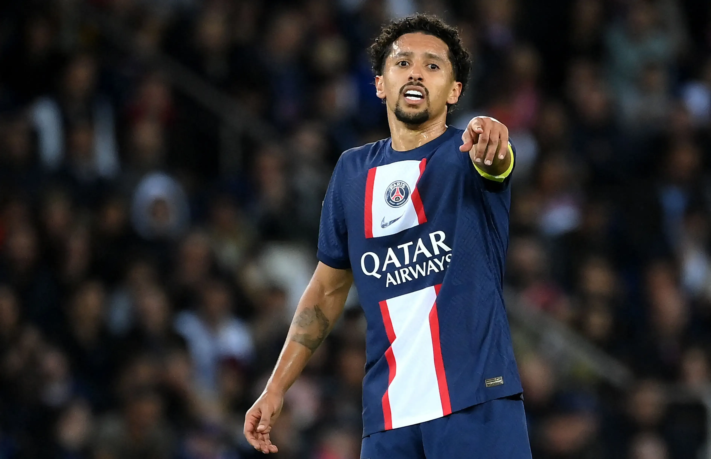
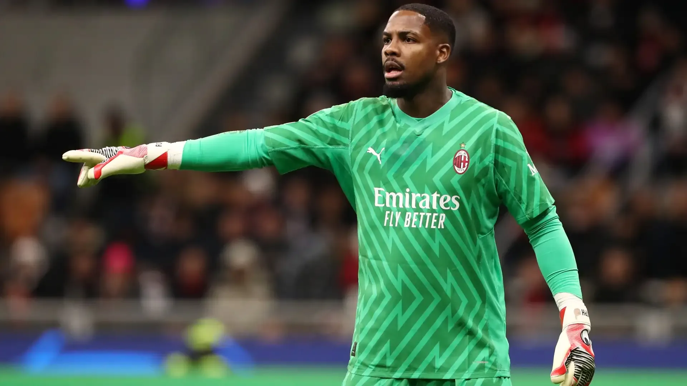
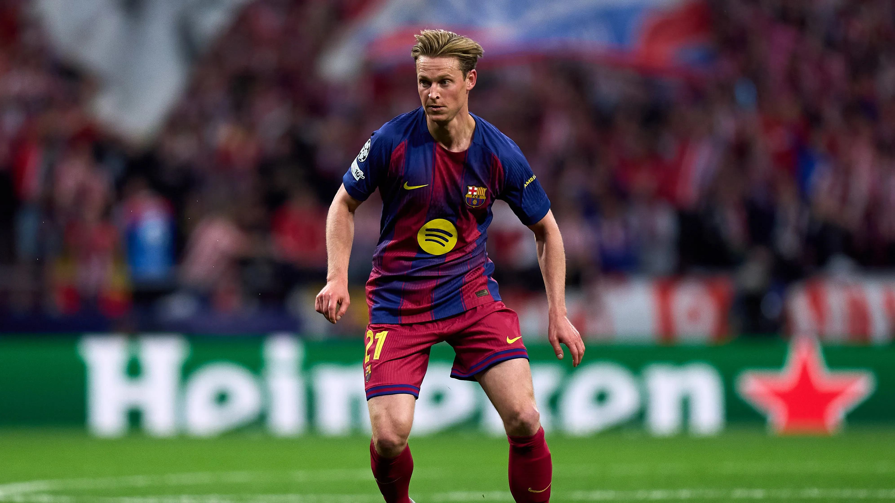
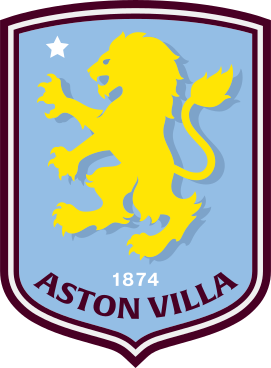
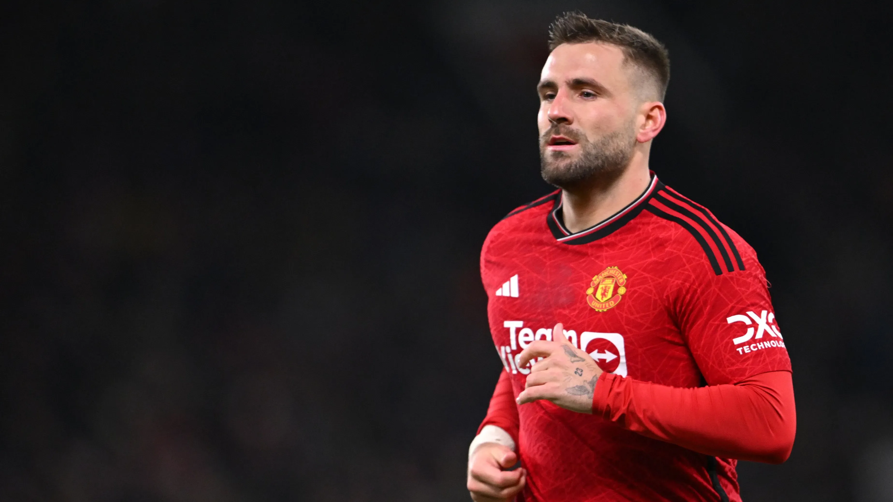

Bukayo Saka
Arsenal
England · 24
Declan RiceArsenalEngland · 27Federico ValverdeReal Madrid — usedUruguay · 27
Bukayo Saka
Arsenal
England · 24
Declan RiceArsenalEngland · 27Federico ValverdeReal Madrid — usedUruguay · 27 Luka ModricAC MilanCroatia · 40Phil FodenManchester City — usedEngland · 26William SalibaArsenalFrance · 25
Luka ModricAC MilanCroatia · 40Phil FodenManchester City — usedEngland · 26William SalibaArsenalFrance · 25
Jan OblakAtletico MadridSlovenia · 33 Ousmane DembéléPSGFrance · 29Bruno GuimarãesArsenalBrazil · 28Antonio RüdigerReal Madrid — usedGermany · 33
Ousmane DembéléPSGFrance · 29Bruno GuimarãesArsenalBrazil · 28Antonio RüdigerReal Madrid — usedGermany · 33 John StonesInterEngland · 32
John StonesInterEngland · 32 PedriBarcelonaSpain · 23MarquinhosPSGBrazil · 32Khvicha KvaratskheliaPSGGeorgia · 25Trent Alexander-ArnoldReal Madrid — usedEngland · 27Mike MaignanAC MilanFrance · 31
Bukayo Saka
RW
PedriBarcelonaSpain · 23MarquinhosPSGBrazil · 32Khvicha KvaratskheliaPSGGeorgia · 25Trent Alexander-ArnoldReal Madrid — usedEngland · 27Mike MaignanAC MilanFrance · 31
Bukayo Saka
RW
Priyaleão over kvara, brave
Youyou left saka on the board
Priyai know. go on then
The pool is the page — everything else is a rail around it. Blocked players stay in the list dimmed and struck through, next to the club that spent them, rather than disappearing: seeing Valverde and Foden crossed out is the fastest way to understand what the constraint just cost you. The bottom bar always names the row you are on, so Draft is never an unlabelled commitment.
van DijkKimmichBellinghamHaalandPriyaleão over kvara, brave
Youyou left saka on the board
Priyai know. go on then
The lobby's diptych carried into the draft at new knob values: what you can take on the left, what you have become on the right, divided by a surface step rather than a rule. Cheap to build because both lobbies already ship this organism — and the reading is unambiguous, because the two halves never argue about which is the subject.
Declan RiceCMLuka ModricCMWilliam SalibaCBOusmane DembéléRWBruno GuimarãesCMJohn StonesCBPedriCMMarquinhosCBKvaratskheliaLWNicolò BarellaCMMike MaignanGKErling HaalandJude BellinghamBukayo SakaJoshua KimmichVirgil van DijkPriyaleão over kvara, brave
Youyou left saka on the board
Priyai know. go on then
Six tiles, sized by how often you look at them: the clock and the candidate are big and top, the pool runs the full left height, the eleven and the room sit where a glance reaches. It survives a five-seat table and a two-seat one without re-flowing, which the tighter layouts don't — the tradeoff is that nothing is emphatic, so the screen reads as a dashboard rather than as a turn.



Priyaleão over kvara, brave
Youyou left saka on the board
Position is a hard gate now, so the formation is the honest primary object: the open discs are the buttons, and picking is choose-a-slot then choose-a-name. It teaches the rule without a sentence of explanation, and the squad you are building is legible at a glance all draft. The cost is that browsing the whole pool becomes a secondary act in a 352px rail.







The pool as inventory, faces first — the one layout where you recognise a player before you read them, which is how people actually think about footballers. Taken players stay in the grid dimmed with who took them, so the board reads as a board. It scans beautifully and filters badly: 546 players at this card size is a lot of paging, so the search field has to be genuinely good.
Priyaleão over kvara, brave
Youyou left saka on the board
The draft as a tool rather than an event: number keys jump the position filter, arrows move the row, return commits. Everything is one keystroke deep, which is what a 15-second clock actually rewards. Dense enough that a five-seat table and eighteen rows fit without paging — and cold enough that the game stops feeling like a game.
round five
Eighteenth pick of forty-four. Seven slots still open. If the clock runs out the cheapest player left for your thinnest position is taken for you.
Bukayo SakaRWDeclan RiceCMLuka ModricCMWilliam SalibaCBOusmane DembéléRWJohn StonesCB
Priyaleão over kvara, brave
Youyou left saka on the board
Priyai know. go on then
The clock is the only number Free Pick has, so it becomes the hero — at 190px you feel the turn rather than read it, and the panic is the design. Everything else is a supporting column beneath. Genuinely useful under a 15-second timer; wasteful once a host turns timers off, which they can, and then the page has a hole in it.
Mike MaignanFederico DimarcoAchraf HakimitakenKvaratskheliaArsenalPSGInterBarcelonaManchester CityLiverpoolReal MadridBayern MunichFour doors onto one pool, because drafters don't all think the same way: best-first, gap-first, club-first, and what-just-went. The club column is where the constraint stops being an abstraction — Arsenal open, City spent, four badges going quiet as the draft runs. Four surfaces means each one is short, so it wants the search field to carry the long tail.
Mike Maignan
Emiliano MartínezWilliam SalibaJohn StonesMarquinhosFederico DimarcoJules KoundéAlexander-ArnoldDeclan RiceLuka ModricPedriKvaratskheliaGabriel MartinelliLuis DíazBukayo SakaOusmane DembéléOne self-contained picker per open slot, each showing its own top three and its own number key. The screen shrinks as the draft runs — seven modules become six, then five — which makes progress physical instead of a counter. Blocked names stay visible inside their module, so you see why a slot is thinner than it looks.
Saka
Priyayou left saka on the board · 2 more
One candidate at a time, at the size a signing deserves — the photo library is 545 deep and this is the only layout that spends it. Cycling with Next candidate turns picking into a decision rather than a scan. It is the most emotional of the twenty and the least efficient: you cannot compare two players without moving, which a 15-second clock will punish.
Bukayo SakaRWDeclan RiceCMLuka ModricCMWilliam SalibaCBOusmane DembéléRWJohn StonesCBPedriCMMarquinhosCBKvaratskheliaLWPriyaleão over kvara, brave
Youyou left saka on the board
Priyai know. go on then
A snake draft is a timeline, so the page draws it as one: four completed stages behind you with what you took, the fifth open and expanded, six greying ahead. It answers "how far in am I" and "when do I pick again" without a sentence, which matters more in Free Pick than in any other format because you get exactly eleven of these.
HaalandSTvan DijkCBBellinghamAMFKimmichCDMPriyaleão over kvara, brave
Youyou left saka on the board
Priyai know. go on then
Turns the squad into a set of questions and picking into answering one. The open question carries its candidates; the six closed ones each name their top three so nothing is hidden behind a click. It is the only layout where the constraint reads as a plain sentence — "Manchester City, already yours" — instead of a dimmed row.
HaalandBellinghamKimmichvan DijkMbappéLeãoRodriHakimiAlissonKaneVinícius JrØdegaardRúben DiasLautaro De Bruynede JongCourtoisBukayo SakaRWDeclan RiceCMLuka ModricCMWilliam SalibaCBDembéléRWJohn StonesCBPedriCMKvaratskheliaLW
De Bruynede JongCourtoisBukayo SakaRWDeclan RiceCMLuka ModricCMWilliam SalibaCBDembéléRWJohn StonesCBPedriCMKvaratskheliaLW
Every squad on screen at once, aligned slot for slot, so reading the room is free — you can see Bot 1 has no keeper and Priya has both wings covered before you commit. It also makes the last rule about constraints legible: Priya's card still shows Real Madrid while yours cannot, which is the per-squad reading, drawn. Scales to five columns; at two it looks empty.
Priyaleão over kvara, brave
Youyou left saka on the board
Free Pick has no prices, so a name is the whole record — this layout takes that literally and makes choosing a player mean choosing a line of type. Scale carries order rather than any rating, and a blocked name stays in the run struck through at full size, which lands harder than a dimmed table row. Fewer players fit on screen than anywhere else in the set.

Look before read: a 760px portrait carries the turn and the copy shrinks to annotation along its base. The rail keeps the pool reachable with a thumbnail per row, so the photo library does the identifying work at both scales. It is the most confident frame in the set and the most expensive — one player's photo at that size is the whole left half of the screen for fifteen seconds.
club.
Four badges are already yours. Every player they have left is off your board for the rest of the draft — and still on everyone else's.
Haaland
van Dijk
Bellingham
Kimmich
Bukayo SakaRWDeclan RiceCMLuka ModricCMWilliam SalibaCBKvaratskheliaLWJohn StonesCBPriyayou left saka on the board
Puts the rule where the eye lands, because the constraint is the only thing that makes Free Pick more than a list — and naming the ten players it just cost you is more persuasive than dimming them. Reads brilliantly at round five and badly at round one, when nothing is spent yet and the poster is announcing an empty rule.
You are picking eighteenth of forty-four, from the top five leagues, under one per club, with nine seconds on the clock and seven slots still empty.
Still to fill: a goalkeeper, a second centre back, both full backs, a centre midfielder and both wings. Six more rounds after this one, and the order turns round at the end of it — you pick again immediately.
Priyago on then
The draft written down as it happens: a ruled record of four rounds with what each one cost you, the fifth open at the bottom of the column, the pool alongside. Reads like a programme rather than an app, and the sentence at the top carries the whole configuration without a settings panel. Quietest frame here — possibly too quiet for a fifteen-second clock.
Priyaleão over kvara, brave
Youyou left saka on the board
Five numbered sections, hairline-ruled, each label stacked above its own heading rather than hung in a margin. The most orderly reading of the same content: nothing competes, every region is named, and a new player could be told where to look in one sentence. The order is fixed though — you cannot promote the pool when the pool is what matters.
Bot 1Vinícius Júnior — left wing
Priyaugh
Bot 2Frenkie de Jong — centre mid
Youbots are eating the wings
Priyaleão over kvara, brave
Youyou left saka on the board
Priyai know. go on then
Leads with the last thing somebody said, because in a friends lobby the argument is the point and chat is the only part of this screen the other three formats can't claim. Every pick is announced into the same column, so the transcript doubles as the draft log. It gives real estate to the one region that is empty in single player — where three bots say nothing at all.
It's your turn. You have Haaland up top, van Dijk at the back, Bellingham and Kimmich in the middle — and four badges you can never use again.
Priya has just taken Rafael Leão and left Bukayo Saka on the board. Declan Rice, Luka Modric and Jan Oblak are all still there too, and you still need a keeper.
Nine seconds. If you say nothing, the cheapest player left for your thinnest slot is taken on your behalf.
Priyago on then
The turn narrated back to you in a sentence, with every name in it live. It is the only frame that states the timeout rule in plain language, and the only one a first-time drafter could follow without being told anything. It is also the slowest: by round nine you will have read the same paragraph nine times, and the rail is doing all the real work. Included as the far end of the range.